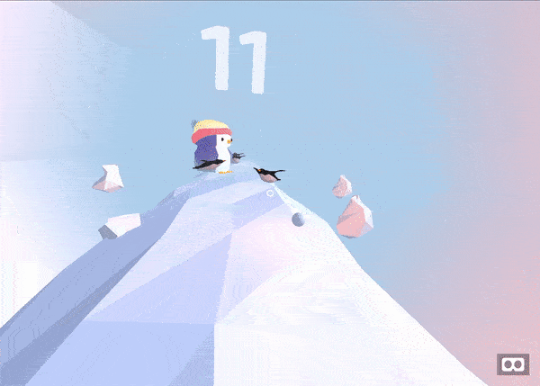

Dealing with pain and treatment anxiety is challenging, especially for kids.
Research proves that Virtual Reality (VR) experience can reduce pain and anxiety during procedures.
It's applied already in certain hospitals,
but using traditional VR headsets is out of reach for many still.
That's why we think it's crucial to bring this tool to more people, by building VR game that can be used on any device, right from the browser.
Tune in to see what we've built during the weekend at Junction Connected 2020!
What we've built
We'be built VR game that allows to distract a patient from pain.
"VR pain reduction, or analgesia, works by acting on that age old platitude "pain is in the mind,"
or rather the academic version, "pain requires conscious attention." - ResearchGate
Game can be played on any device, with or without VR headsed, levereging WebVR, threeJS and AFrame
framework
Try it out
You can play the game from your browser. Tested on desktop (Chrome, Firefox, firefox gives better FPS), iPhone (starting from 7th model)
(Safari), iPad (request mobile site)

1. iPhone users -> go first to setup page, and grant permission to
motion sensor, and make sure you can navigate by moving your phone
- 1.1 I would recommend pressing "aA" in Safari and selecting "hide toolbar", for more immersive feeling. Do this before pressing "VR" button in bottom right corner -> otherwise you'll see double picture in VR headset
2. Android -> go straight to the game. NB! in our tests most Androids didn't interact successfully with VR (noizy sensor data) or had too low FPS. If that's the case for you - we're sorry, you can still check the video/use your computer
Unfortunately, WebVR might not work smoothly on all Android devices/browsers.
If you get glitchy/laggy experience you can try another browser,try on your computer, or watch demo video
below!
Big thanks to A-Frame (aframe.io) for great tutorials
and to Alvin Wan and his
blog post
series on building VR game using A-Frame,
whose examples and explanations helped us build the game in one day with no prior experience in game
development.
Also, https://glitch.com/ is a great tool for interactive & collaborative development, it surely made our iterations faster